السلسلة 81
السيارة (صنف B) · 40 سؤال. كل سؤال فيه الصورة والصوت. اختار الجواب (ولا جوج إلا كانو صحاح)، ورك على «تأكيد» باش تشوف واش صبتي.
- 40سؤال
- 32باش تنجح
- 1 – 4جواب واحد ولا أكثر
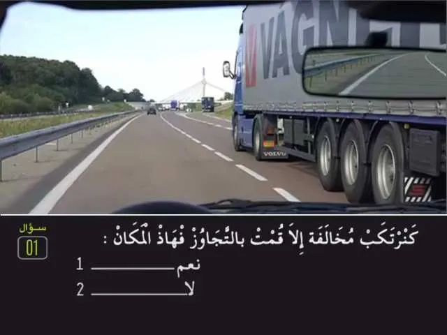
الكلافيي: 1–4 للجواب، Enter للتأكيد وللسؤال الجاي.
السلسلة 81 · النتيجة ديالك
0 / 40
السلسلة 81
السيارة (صنف B) · 40 سؤال، بالصوت، مع الجواب الصحيح والشرح.
السؤال 1
بيّن الجواب
الجواب الصحيح: 2
كما نلاحظ فيوجد خط متّصل على الجهة اليسرى وهذا يعني على أن الطّريق ذات إتّجاه واحد (لا يوجد سيارات قادمة في الاتّجاه المعاكس) المكان الذي تتواجد فيه الشاحنة فهو مسلك السّير العادي، وأنا أتواجد في مسلك التّجاوز، ولا توجد إشارة طرقية تمنعني من التّجاوز، إذن لا أرتكب مخالفة بتجاوزي الشّاحنة في هذا المكان.
السؤال 2
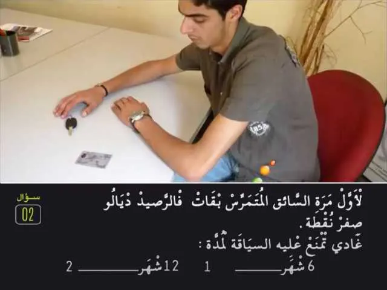
بيّن الجواب
الجواب الصحيح: 1
مدوّنة السّير الجديدة فإن السائق المتمرّس (هو السائق الذي تجاوز المدة الاختبارية سنتين)، عندما تنتهي 30 نقطة ويصبح رصيده من النّقاط 0 نقطة في هذه الحالة سوف تّمنع عليه السّياقة لمدة 6 أشهر.
السؤال 3
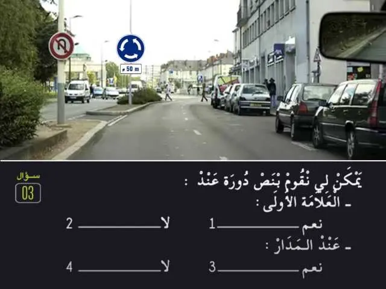
بيّن الجواب
الجواب الصحيح: 2 و 3
العلامة الطّرقية الأولى تعني ممنوع عمل نصف دورة، يعني ذلك المسلك الموجود على اليسار في الصورة ممنوع عليّ الانعطاف فيه، والعلامة الطّرقية الثانية تعني المدار (رومبوان) على بعد 50 متر وفيه يمكنني من عمل نصف دورة. إذن الإجابة الصحيحة 2 و 3.
السؤال 4
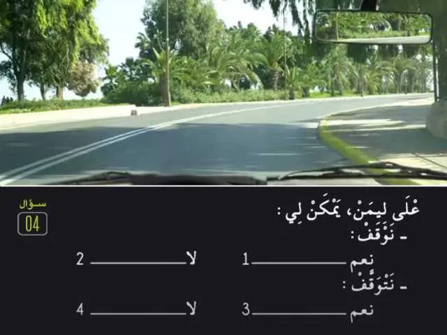
بيّن الجواب
الجواب الصحيح: 2 و 4
الرّصيف مصبوغ باللون الأصفر، وهو يعني أن الوقوف والتوقّف ممنوع.
السؤال 5
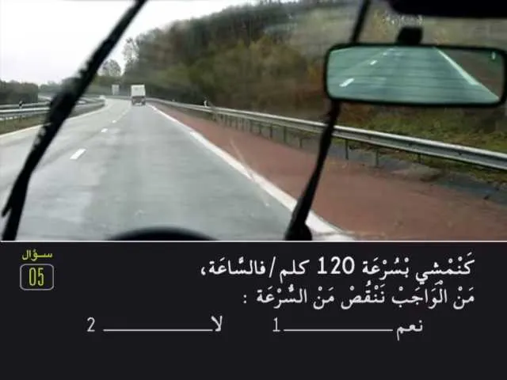
بيّن الجواب
الجواب الصحيح: 1
بما أن السؤال يقول أنا أسير بسرعة 120 كلم في الساعة، والخط متصل أقصى اليسار فهذا يعني على أننا في طريق سيّار. وبما أنه يوجد مطر فإن خطورة الانزلاق على الطّريق تزداد، وعندما يكون هنالك مطر في طريق سيّار فالسرعة القانونية هي 100 كلم في الساعة وليست 120 كلم في الساعة. إذن في هذه الحالة من الواجب عليّ الإنقاص من السّرعة.
السؤال 6
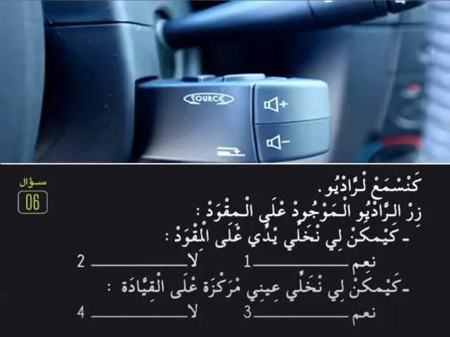
بيّن الجواب
الجواب الصحيح: 1 و 3
نمادج السيارات الجديدة فإنّها تحتوي على أزرار قرب المِقود لكي نتمكّن من التحكّم في الراديو فقط بأصابع اليد، وأعيُنُنا مركزة على القيادة.
السؤال 7
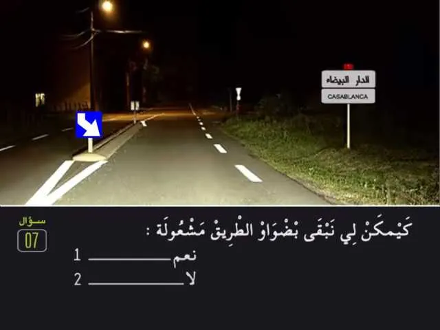
بيّن الجواب
الجواب الصحيح: 2
اللافتة الطّرقية تعني على أننا سوف ندخل المجال الحضري (مدينة الدار البيضاء) وداخل المجال الحضري ممنوع استعمال أضواء الطّريق.
السؤال 8
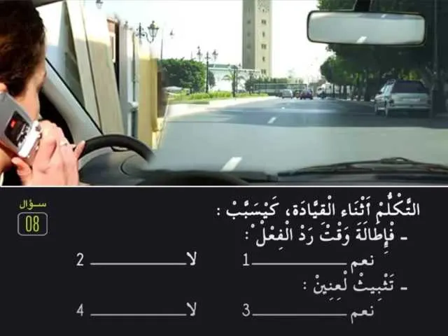
بيّن الجواب
الجواب الصحيح: 1 و 3
التكلّم أثناء السياقة أولا يعتبر مخالفة من الدرجة الثانية. بالنسبة للسؤال فنعم، التكلّم على الهاتف أثناء السياقة فهو يطيل وقت رد الفعل، لأن الشخص يكون مشغول في الهاتف وتكون ردة فعله طويلة عند وقوع شيئ ما على الطّريق، بالنسبة لتثبيت العنين فهي تعني عند التكلّم على الهاتف فالشخص يبقى مركز وعيناه لا تكون مركزة على الطّريق. إذن نعم التكلّم أثناء السياقة يثبث العينين أيضا.
السؤال 9
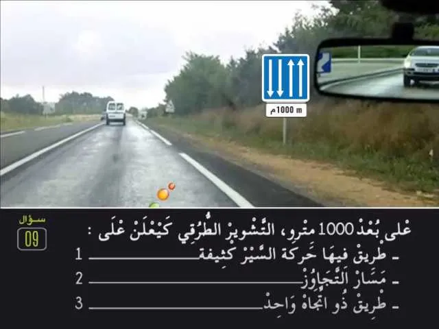
بيّن الجواب
الجواب الصحيح: 2
على بعد 1000 متر فإن العلامة الطّرقية تشير إلى أنه يوجد مسلكين للسير بالنسبة لي، ومسلكين للسّير بالنسبة للسيارات القادمة في الاتّجاه المعاكس. إذن هذه العلامة الطّرقية فهي لا تعني أن الطّريق فيها حركة سير كثيفة، بالنسبة لمسار التّجاوز فهذا صحيح لأنه يوجد مسلكين لي، واحد للسير العادي والاخر لعملية التّجاوز، بالنسبة لطريق ذو إتجاه واحد فخطأ لأن الطّريق ذات اتّجاهين.
السؤال 10
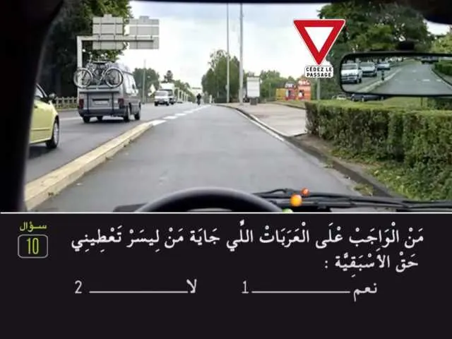
بيّن الجواب
الجواب الصحيح: 2
العلامة الطّرقية فهي تعني ليس لي حق الأسبقية، إذن ليس من الواجب على العربات القادمة من الجهة اليسرى أن تعطيني حق الأسبقية، لأنه أنا من يجب عليّ إعطائهم حق الأسبقية.
السؤال 11
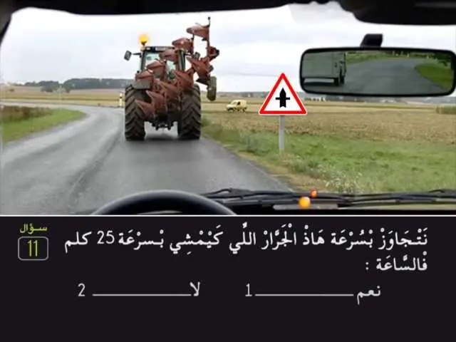
بيّن الجواب
الجواب الصحيح: 2
حتى وإن كان الجرار يسير ببطئ ولديّ علامة حق الأسبقية فلا يمكنني التّجاوز لأنه يوجد منعرج.
السؤال 12
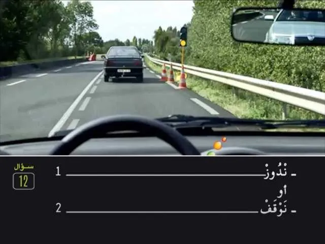
بيّن الجواب
الجواب الصحيح: 1
نتواجد قرب أشغال، هذا واضح من خلال العلامات الطّرقية في الأرض وأيضا التّشوير الضّوئي المؤقت. الضوء الأخضر رفراف عند التّشوير الضوئي المؤقت (الصورة لا تتحرك لكي يظهر أنه رفراف) عندما يكون الضوء رفراف (إمّا أخضر أو أصفر) في إشارة ضوئية مؤقتة فأقوم بالمرور مع الإنقاص من السّرعة لوجود الأشغال، (في حالة الضوء أحمر فأقوم بالوقوف) وفي هذه الحالة يما أن الضوء أخضر رفراف فيجب عليّ الانتباه والمرور.
السؤال 13
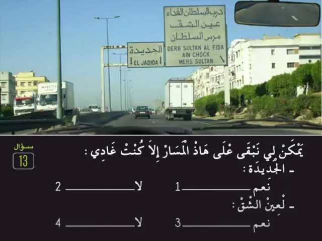
بيّن الجواب
الجواب الصحيح: 1 و 4
لديّ علامتين للإرشاد، العلامة على اليمين إذا كنت سوف أتّجه إلى درب السلطان أو عين الشق أو مرس السلطان. وفي هذه الحالة المكان المناسب لهذه الاتّجاهات هو المسلك على اليمين. وإذا كنت سوف أتّجه الى مدينة الجديدة فالمكان المناسب هو المسلك على اليسار. إذن بما أنني أسير في المسار الذي يوجد على اليسار فيمكنني البقاء فيه إذا كنت سوف أذهب إلى الجديدة، لكن لا يمكنني البقا في هذا المسار الذي على اليسار لو كنت أريد الذهاب إلى عين الشْق.
السؤال 14
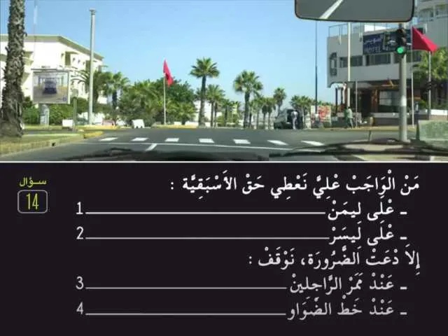
بيّن الجواب
الجواب الصحيح: 4
الإشارة الضوئية خضراء إذن لا أعطي حق الأسبقية لليمين أو اليسار لأن الإشارة الضوئية خضراء والأسبقية لي. لو دعت الضّرورية لكي أتوقف فأقوم بذلك عند خط الأضواء المرسوم على الأرض وليس في ممر الراجلين، لأن الوقوف في ممر الراجلين ممنوع.
السؤال 15
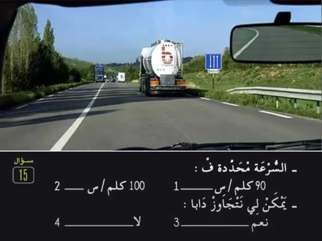
بيّن الجواب
الجواب الصحيح: 2 و 3
نتواجد خارج التّجمع السّكني وفي طريق وطنية ذات اتّجاهين، وفي طريق وطنية السّرعة محدّدة في 100 كلم في الساعة. بالنسبة للتّجاوز فلدينا علامة طرقية تشير على أنه إبتداء من العلامة سوف يصبح لديّ مسلكين للسّير ومسلك واحد للعربات القادمة من الاتّجاه المعاكس، إذن بما أنه سوف يكون لديّ مسلكين للسّير فيمكنني استعمال المسلك الثاني لعملية التّجاوز.
السؤال 16
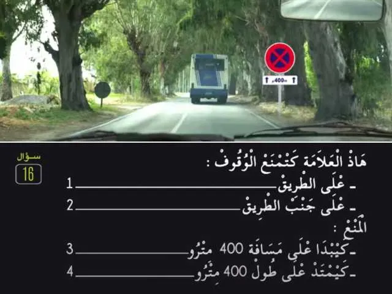
بيّن الجواب
الجواب الصحيح: 1 و 2 و 4
العلامة الطّرقية تمنع الوقوف على الطّريق وعلى جنب الطّريق على إمتداد 400 متر (أو على مسافة 400 متر).
السؤال 17
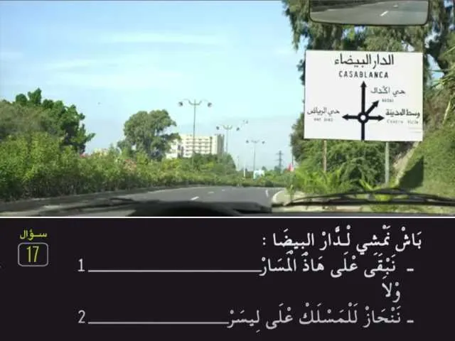
بيّن الجواب
الجواب الصحيح: 1
لدي علامة إرشاد تشير إلى أنه يتواجد مدار في الأمام وفيه 4 مسالك كل واحد فيهم يتّجه إلى وجهة معيّنة. لكي أذهب إلى مدينة الدار البيضاء فكما تبيّن علامة الإرشاد فيجب عليّ الذهاب مباشرة. (لا أنحاز للمسلك على اليسار لأنه يؤدي إلى حي أكدال أو وسط المدينة).
السؤال 18
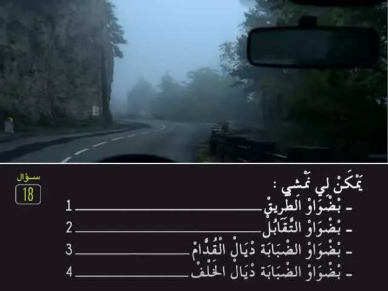
بيّن الجواب
الجواب الصحيح: 2 و 3 و 4
يوجد ضباب في هذه الحالة نستعمل أضواء التّقابل وأضواء الضباب الأمامية والخلفية.
السؤال 19
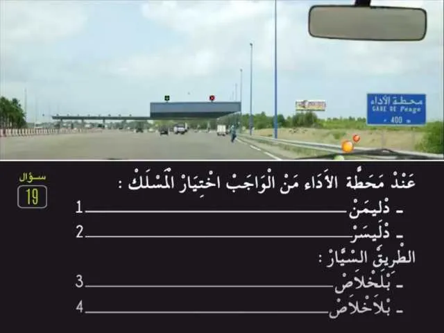
بيّن الجواب
الجواب الصحيح: 2 و 3
أتواجد قرب محطة الاداء ، كما تبيّن الصورة فمركز الاداء الذي يتواجد على اليمين فلا يشتغل (علامة حمراء)، ومركز الاداء الذي يتواجد على اليسار يشتغل (علامة خضراء) إذن من الواجب عليّ إختيار المسلك الذي على اليسار. بالنسبة للطّريق السيّار فهو غير مجاني، مدفوع (بلخلاص).
السؤال 20
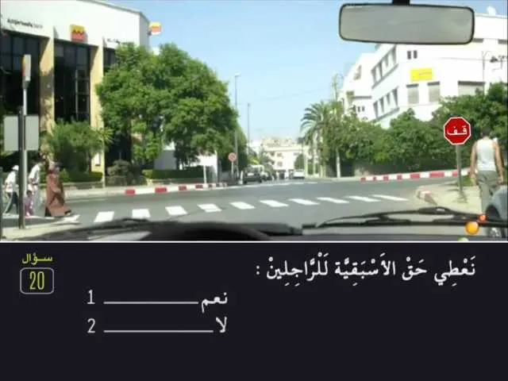
بيّن الجواب
الجواب الصحيح: 1
لدي علامة قف، أقوم بالوقوف وإعطاء حق الأسبقية للعربات القادمة من اليمين واليسار، وأيضا أقوم بإعطاء حق الأسبقية للرّاجلين لأنهم اندمجوا في ممر الراجلين إذن من الواجب عليّ إعطائهم حق الأسبقية.
السؤال 21
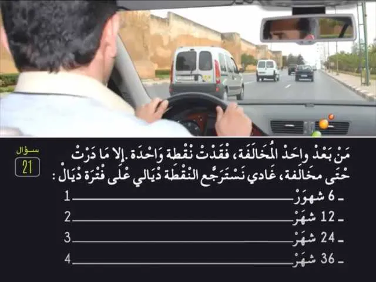
بيّن الجواب
الجواب الصحيح: 2
عندما أفقد نقطة من رخصة السّياقة بسبب مخالفة، فيمكنني استرجاع هذه النقطة على فترة عام واحد إذا لم اقم بعمل مخالفة اخرى.
السؤال 22
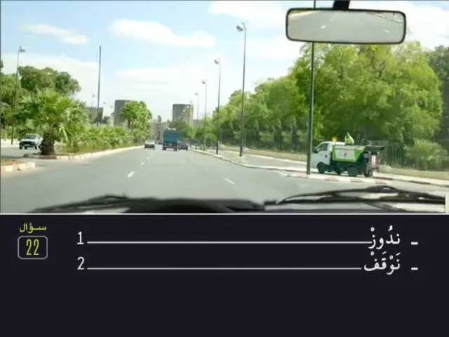
بيّن الجواب
الجواب الصحيح: 1
العربة المتواجدة على اليمين فهي ليس من العربات التي يجب عليّ إعطائها حق الأسبقية (مثلا الإسعاف أو المطافئ أو الشرطة..) هذه عربة النظافة، لديها خط متقطع وهو يعني ليس لك حق الأسبقية. إذن في هذه بما أن هذه العربة هي عربة عادية وليس لها حق الأسبقية فأقوم بالمرور.
السؤال 23
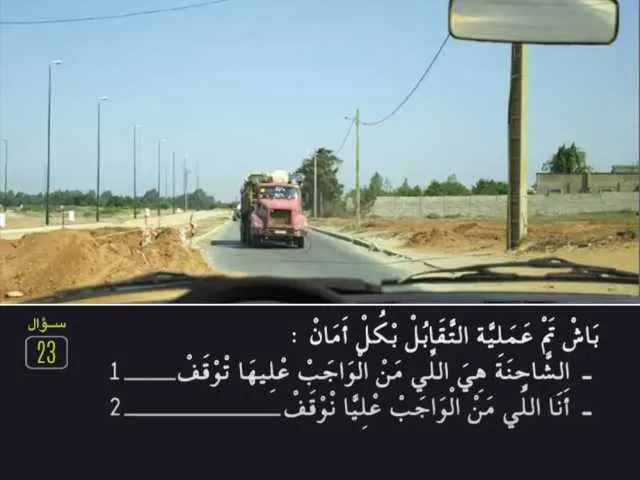
بيّن الجواب
الجواب الصحيح: 1
تتم عملية المرور في مثل هذه الحالات بالتّناوب لأنه يوجد أشغال، ومن يجب عليه الوقوف في مثل هذه الحالات هي العربات التي يوجد العائق في جهتها. في هذه الحالة العائق يتواجد على الجهة اليسرى في مسلك الشاحنة، إذن يجب على الشاحنة الوقوف والسّماح لي بالمرور أنا الأول لكي تتم عملية التّقابل بكل أمان.
السؤال 24
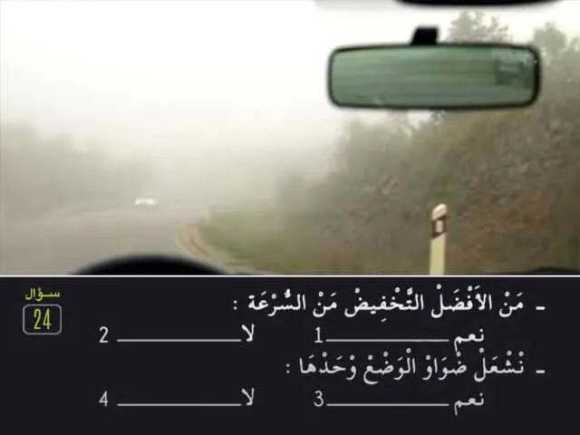
بيّن الجواب
الجواب الصحيح: 1 و 4
يوجد ضباب ونتواجد في منعرج إذن من الأفضل تخفيض السّرعة لتفادي الأخطار، ولا أقوم بتشغيل أضواء الوضع وحدهم. (في الضباب أقوم بتشغيل أضواء التّقابل وأضواء الضباب الأمامية والخلفية. وليس أضواء الوضع.)
السؤال 25
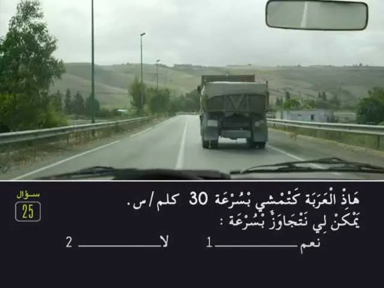
بيّن الجواب
الجواب الصحيح: 2
حتى وإن كانت الشّاحنة تسير ببطئ فلا يمكنني التّجاوز لأنه يوجد خط متّصل.
السؤال 26
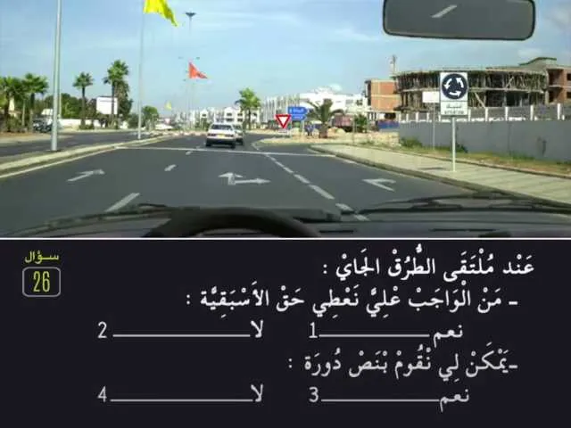
بيّن الجواب
الجواب الصحيح: 1 و 3
لدي علامة طرقية انتباه يوجد مدار، وفي الأمام لو لاحظنا جيّدا فيوجد لدينا ايظا علامة ليس لي حق الأسبقية. إذن في ملتقى الطّرق القادم يجب عليّ إعطاء حق الأسبقية وأيضا يمكنني عمل نصف دورة في المدار.
السؤال 27
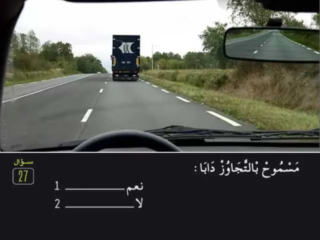
بيّن الجواب
الجواب الصحيح: 1
لدينا 3 مسالك، مسلكين لي، ومسلك اخر للعربات القادمة في الاتّجاه المعاكس، التّشوير الأفقي الخط المتقطّع يسمح لي بالتّجاوز، إذن يمكنني استعمال المسلك الثاني الخاص بالتّجاوز لكي أتجاوز الان لأنه مسموح لي، حتى وإن كنا في عقبة، لأنه لا توجد عربات سوف تاتي في الاتّجاه المعاكس في المسار الثاني لأنه مسار خاص بي ويمكنني استعماله لكي أتجاوز. العربات في الاتّجاه المعاكس لديها فقط مسلك واحد اظافة إلى خط متّصل يمنعها من استعمال المسلك الخاص بي للتّجاوز.
السؤال 28
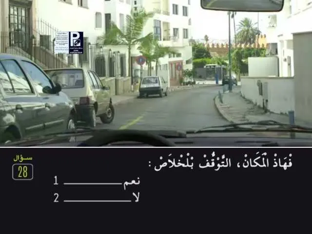
بيّن الجواب
الجواب الصحيح: 1
العلامة الطّرقية الموجودة على اليسار فهي تشير إلى أن هذا الموقف الخاص بالسيارات فهو بالاداء (بلخلاص).
السؤال 29
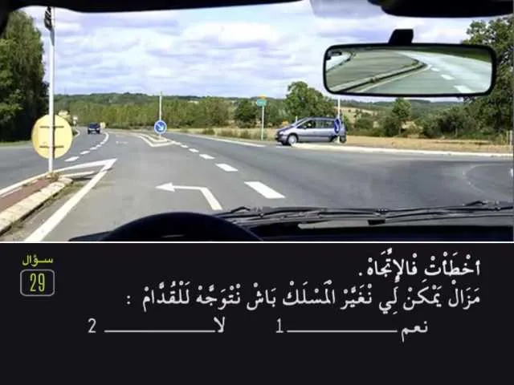
بيّن الجواب
الجواب الصحيح: 2
السهم المرسوم على الأرض فهو يجبرني على الانعطاف على اليسار. لا يمكنني تغيير المسلك الذي على اليمين، لأنني أنا الان مجبر على الانعطاف على اليسار كما يشير سهم الإجبار المرسوم على الأرض.
السؤال 30
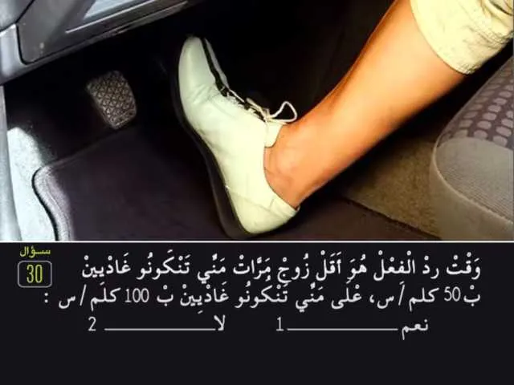
بيّن الجواب
الجواب الصحيح: 2
وقت رد الفعل في المتوسّط هو ثانية كيفما كانت السّرعة التي أسير بها، ووقت رد الفعل ليس لديه علاقة بالسّرعة.
السؤال 31
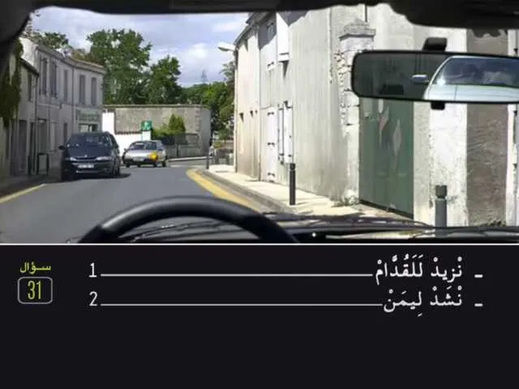
بيّن الجواب
الجواب الصحيح: 1
العربة السوداء متوقّفة على اليمين، وهي تعتبر عائق بالنسبة للعربة الّرمادية لأنها في جهتها، في هذه الحالة يجب على العربة أن تنتظر أن أقوم أنا بالمرور أولا لأنه يوجد عائق في جهتها وأنا لا يوجد شيئ في طريقي. إذن نزيد القدام.
السؤال 32
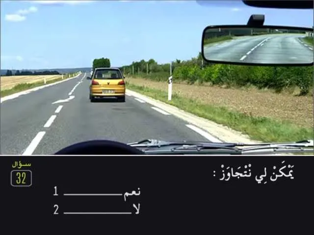
بيّن الجواب
الجواب الصحيح: 1
لا توجد عربات تستعد للتّجاوز من الخلف وأيضا التّشوير الأفقي الخط المتقطّع يسمح لي بالتجاوز، إذن يمكنني التّجاوز. (أسهم الانحياز المرسومة على الأرض فهي خاصة بالعربات القادمة في الاتّجاه المعاكس ولا تعنيني).
السؤال 33
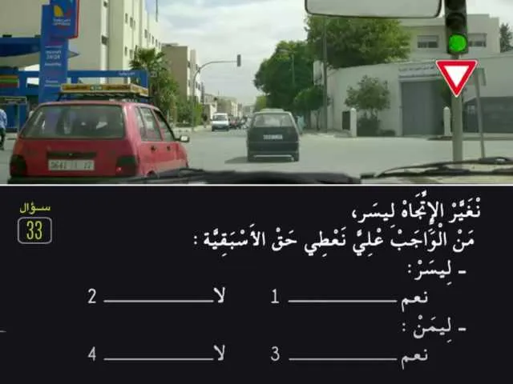
بيّن الجواب
الجواب الصحيح: 2 و 4
لدينا إشارة ضوئية خضراء مع علامة طرقية انتباه ملتقى طرق وإعطاء حق الأسبقية للعربات القادمة من اليمين واليسار، في هذه الحالة عندما تكون الإشارة الضوئية تشتغل فنقوم بتطبيقها ولا نقوم بتطبيق العلامة ليس لديكم حق الأسبقية. إذن في هذه الحالة أنا من لديّ حق الأسبقية لأنه لدي أشارة ضوئية خضراء، لا أعطي حق الأسبقية لليمين ولا لليسار.
السؤال 34
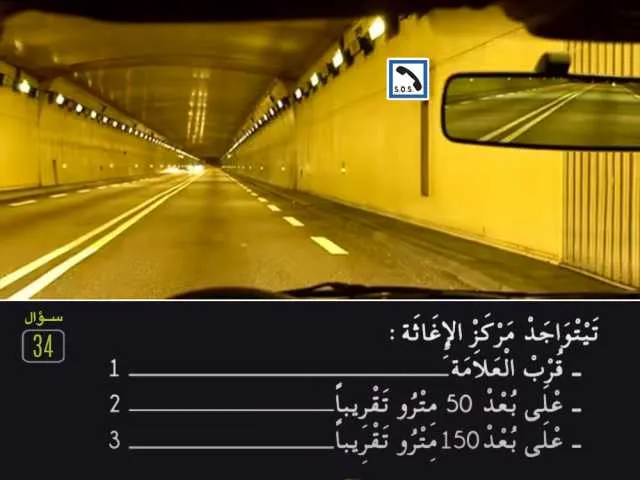
بيّن الجواب
الجواب الصحيح: 1
توجد علامة مركز الإغاثة الهاتف، وهذا المركز يتواجد قرب العلامة.
السؤال 35
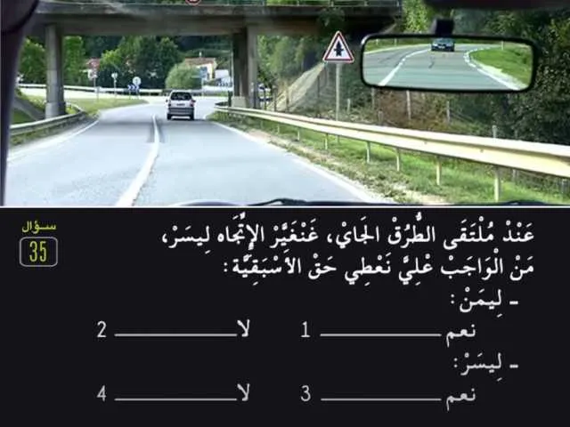
بيّن الجواب
الجواب الصحيح: 2 و 4
العلامة الطّرقية تعني انتباه خطر طريق ذات أولوية في ملتقى الطّرق القادم على بعد 150 متر، الأسبقية لي. إذن لا أعطي حق الأسبقية للعربات القادمة من الجهة اليمنى أو الجهة اليسرى إذا كنت أريد الانعطاف على اليسار، لأن الأسبقية لي.
السؤال 36
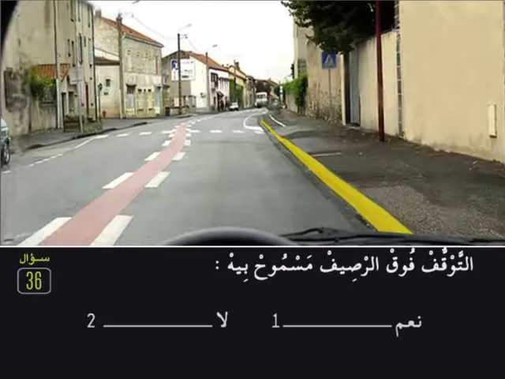
بيّن الجواب
الجواب الصحيح: 2
الرصيف المصبوغ بالأصفر فهو يعني على أن الوقوف والتوقّف ممنوع. كما أنه ممنوع عليّ التوقّف فوق الرّصيف، الرصيف مخصص للّراجلين.
السؤال 37
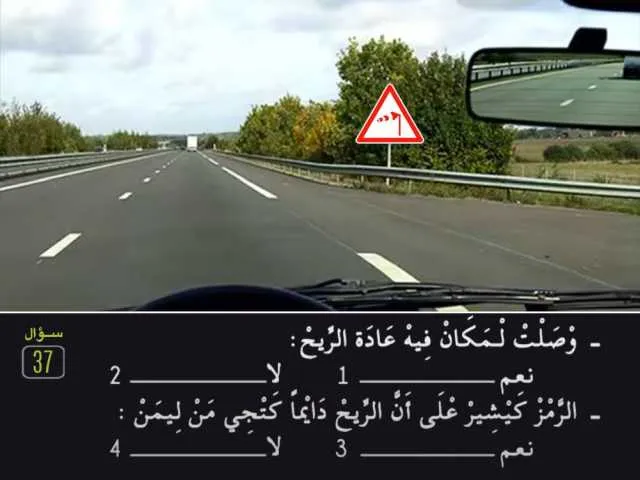
بيّن الجواب
الجواب الصحيح: 1 و 4
العلامة الطّرقية تعني انتباه خطر رياح جانبية. إذن وصلت لمكان يوجد به عادة الرّياح. بالنسبة للرمز فهو لا يشير إلى أن الرّياح تأتي من اليمين فقط. الرّياح يمكن أن تأتي من أي جهة وليس فقط اليمين.
السؤال 38
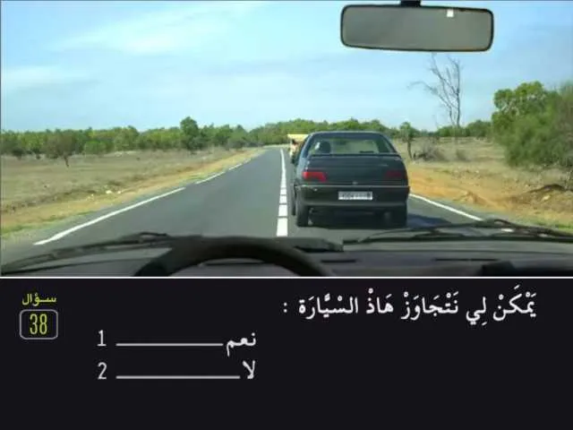
بيّن الجواب
الجواب الصحيح: 2
الخطوط المتقطّعة على الأرض فهي متقاربة جدا وهذا يعني على أن الخط سوف يصبح متّصل (لو لاحظنا جيّدا في الصورة ففي الأمام الخط متّصل) إذن لا يمكنني تجاوز هذه السيّارة.
السؤال 39
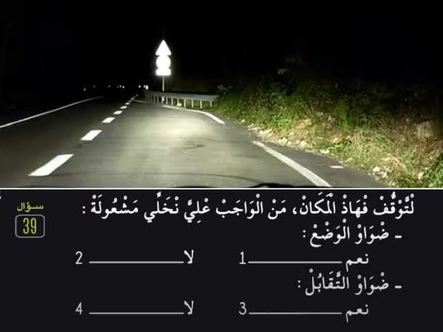
بيّن الجواب
الجواب الصحيح: 1 و 4
نتواجد في الفترة اللّيلية، في هذه الحالة لكي أقوم بالتوقّف في هذا المكان على جنب الطّريق فيجب عليّ أن أترك أضواء الوضع مشتغلة لأننا نتواجد في الفترة الليلية ويوجد خطر اذا لم أترك أضواء الوضع مشتغلة لأن العربات الأخرى يمكن أن لا ترى سيارتي في الليل، لذلك يجب عليّ ترك أضواء الوضع مشتغلة. كما أنه ليس من الواجب عليّ ترك أضواء التّقابل مشتغلة أولا لأن هذا سوف يستنزف بطّارية السيّارة وثانيا أضواء الوضع فهي كافية.
السؤال 40
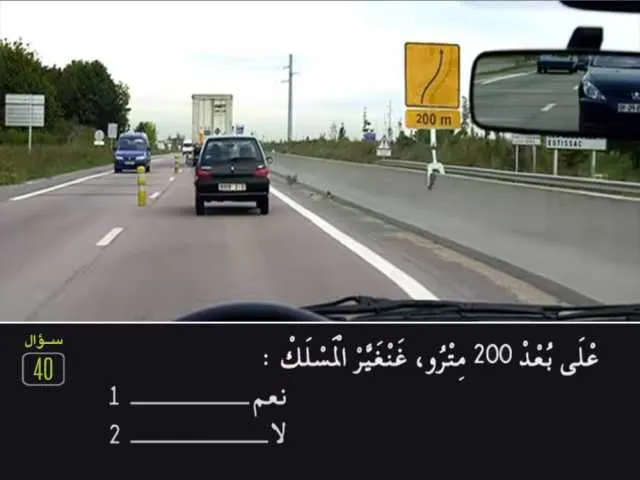
بيّن الجواب
الجواب الصحيح: 1
لدينا علامة طرقية صفراء وهي علامة مؤقتة تشير إلى وجود أشغال، هذه العلامة الطّرقية فهي تشير على بعد 200 متر سوف نقوم بتغيير المسلك.